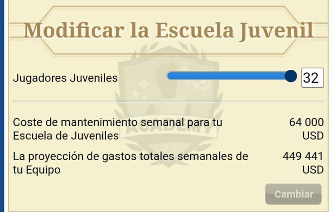
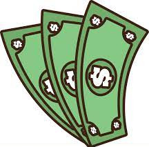
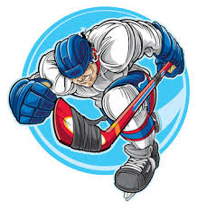
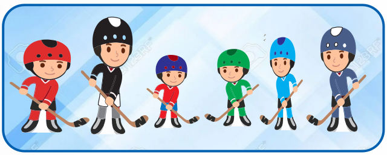
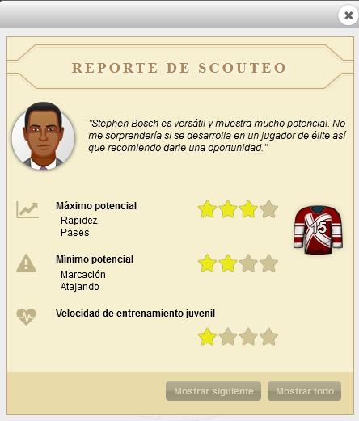

|
 |
|
Buenas a todos los lectores, en esta nueva sección hablaremos de como entrenar juveniles en Hockey. Para eso veremos diferencia, similitudes con el fútbol y sobre todo formas de entrenar. En hockey a diferencia con el fútbol para que un jugador sea bueno, sin llegar a ser crack se necesita 5 o 6 habilidades altas, en hockey entre 4 y 5. Empezaremos abriendo la academia o en su defecto pidiendo siempre lo máximo posible. Tomaremos en cuenta de esos 32, 1 a 3 juveniles sera buenos y de 2 a 4 saldrán regulares, el resto se vendera o se despediría en peor de los casos.

Los juveniles es la fuente de jugadores y también la fuente de nuestros ingresos.
Cuando uno pide Juveniles siempre se imagina que te llegara el crack o ese jugador que te hará ganar millones.

Y bueno llegan los juveniles, eso que pensamos que nos van a ser millonarios, los que nos van a hacer ganar copas. No es lo que imaginábamos, pero ellos son. Es un tema de tiempo, paciencia y sobre todo entrenarlos dandole CE y entrenarlos con entrenador. Lo primero que tenemos que hacer es hacer es el repórte del scouteo.

HP Es el máximo potencial, son las habilidades donde mas alto van a llegar. El resto de habilidades solo pueden alcanzar, mas no pasar. LP Mínimo potencial, Es la inversa del HP, son las habilidades donde mas bajo se van a quedar. El resto de habilidades tendrá la misma cantidad o lo superara. S Velocidad de entrenamiento Juvenil, es la velocidad de entrenamiento que va a entrenar en su etapa juvenil. Después de hacer el scouteo empezaremos a descartar todos los HP2 y todo aquel juvenil que tenga LP en poder. Solo los porteros no necesitan esa habilidad, así que si tiene HP en portería y LP en poder, es un jugador para entrenar. Ahora empezaremos a entrenar a los que tengan HP en poder, le buscaremos una posición ya sea defensa o delantero. Podemos elegir esa posición viendo su LP o simple corazonada. Los juveniles que tengan HP en entrada o remate, le buscaremos entrenar poder y así ver si es un buen jugador para futuro. Los juveniles que vengan con HP en portería, los entrenaremos para porteros. En la siguiente edición veremos ejemplos de juveniles en donde no tengan estas pistas, como fueron entrenados y así buscar la mayor cantidad de juveniles que puedan servir para el equipo. |
 |
 |  |